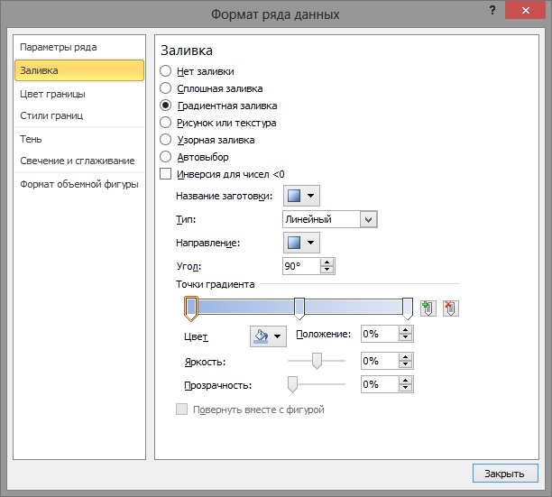
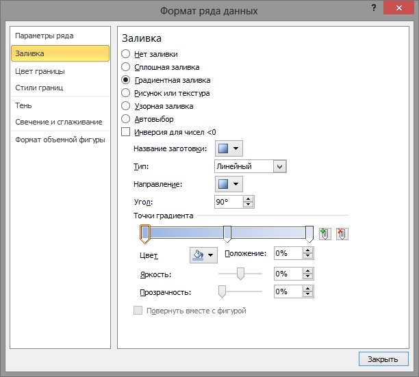

Форматування діаграм
Метою форматування діаграми є надання їй привабливішого вигляду та більшої наочності. Ми вже навчилися задавати значення кількох параметрів діаграми, таких як її назва, назви осей координат, наявність чи відсутність легенди. Насправді параметрів у діаграми набагато більше, адже вона складається з кількох об’єктів, кожен з яких має власний набір характеристик. Набір складових елементів у діаграм всіх видів майже однаковий (див. табл. 4.1), проте вони можуть мати зовсім різний вид.
Таблиця 4.1. Елементи діаграми
Для форматування діаграми можна на вкладці Конструктор в групі Стилі діаграми вибрати один зі стилів оформлення діаграми. Набір стилів можна змінити, виконавши Розмітка сторінки  Теми
Теми  Теми і вибравши зі списку іншу тему. При цьому змінюється не лише набір стилів, а й оформлення самої діаграми.
Теми і вибравши зі списку іншу тему. При цьому змінюється не лише набір стилів, а й оформлення самої діаграми.
Для форматування окремого об’єкта діаграми його також потрібно виділити. Для виділення об’єкта можна вибрати його з використанням миші. Можна також на вкладці Макет або Формат у групі Поточний виділений фрагмент вибрати назву цього об’єкта в списку поля Елементи діаграми. Деякі об’єкти діаграми, наприклад ряд, складаються х кількох частин. Щоб виділити тільки одну частину, наприклад окрему точку, потрібно спочатку виділити весь об’єкт, а потім повторно вибрати потрібну його частину.
Після вибору об’єкта діаграми для форматування можна:
- вибрати один зі стилів оформлення виділеного об’єкта зі списку групи Стилі фігур вкладки Формат;
- вибрати один зі стилів оформлення текстового об’єкта зі списку групи Стилі WordArt вкладки Формат;
- вибрати один з видів заливки, оформлення меж, ефектів зі списків кнопок Заливка фігури, Контур фігури, Ефекти для фігур групи Стилі фігур вкладки Формат;
- виконати Формат
 Поточний виділений фрагмент Форматувати виділений фрагмент і на вкладках вікна форматування виділеного об’єкта (наприклад, рис. 4.15) встановити необхідні значення його властивостей;

Поточний виділений фрагмент Форматувати виділений фрагмент і на вкладках вікна форматування виділеного об’єкта (наприклад, рис. 4.15) встановити необхідні значення його властивостей;

Рис. 4.15. Вікно Формат рядів даних - виконати команди контекстного меню виділеного об’єкта.
Щоб змінити розміри діаграми, потрібно виділити область діаграми і перетягнути один з маркерів зміни розмірів,що розташовані на її межі. Крім того, вбудовану діаграму можна перетягнути в інше місце на аркуші.